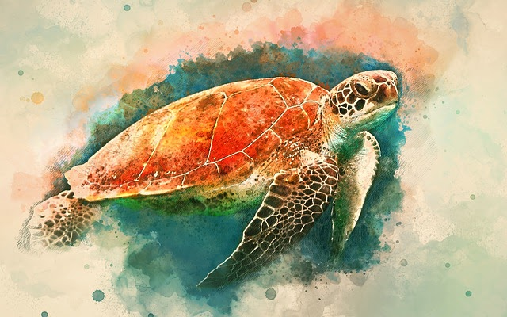
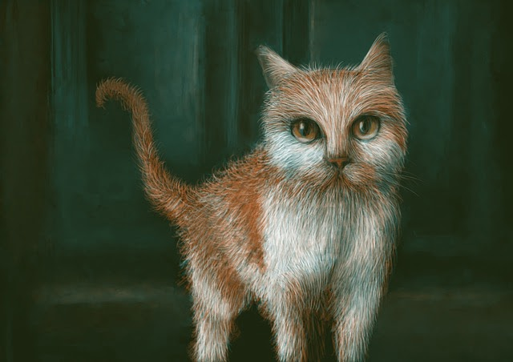

tool · clip interrogator
CLIP Interrogator — turn an image into a prompt
Want to figure out what a good prompt might be to create new images like an existing one? The CLIP Interrogator is here to get you answers. A local port of pharma/CLIP-Interrogator — it reads your image, writes a prompt, and ranks it against artists, mediums, movements, trends and flavors.
What it is
Two models work together. BLIP (a vision-language model) writes a caption for your image; then CLIP (a vision-text matcher) blends that caption with artist, medium, movement, trending and flavor vocabularies until it converges on a prompt that reproduces the image. The same pipeline powers prompt-recovery workflows all over generative art.
Image → prompt
Four interrogation modes (best, fast, classic, negative) converge on a prompt that would recreate the image.
Image analysis
Top-5 rankings per vocabulary — medium, artist, movement, trending, flavor — with similarity scores.
Local-first
Everything runs in an uv-managed venv on your machine. No uploads, no queue, no API keys. The image never leaves the twin.
Two CLIPs, one BLIP
ViT-L for Stable Diffusion 1.* workflows, ViT-H for 2.* — the BLIP captioner is shared, so the second model adds little memory.
How to run
The tool is a Python package under lib/clip-interrogator/ with its own
uv-managed venv (CPython 3.12). Models download once into the Hugging Face cache
(~1 GB for ViT-L + BLIP) and are reused afterwards.
# one-time: create the venv + resolve deps (npm run clip:setup) uv sync --project lib/clip-interrogator # check: import + device + registry, downloads NO weights (npm run clip:check) uv run --project lib/clip-interrogator clip-interrogate check --self-check # gradio UI on http://127.0.0.1:7860 (npm run clip:ui) uv run --project lib/clip-interrogator python -m clip_interrogator_app.ui # CLI: real interrogation of a shipped example (npm run clip:interrogate) uv run --project lib/clip-interrogator clip-interrogate interrogate assets/clip-interrogator/example01.jpg --mode best # CLI: top-5 image analysis, JSON out uv run --project lib/clip-interrogator clip-interrogate analyze assets/clip-interrogator/example02.jpg --model vit-h --top 5 --json
You can also drive it through npm — the twin's tooling convention:
npm run clip:ui, npm run clip:interrogate,
npm run clip:check, npm run clip:setup,
npm run e2e:clip.
Interrogation modes
Four convergence strategies, inherited from the upstream tool.
| Mode | Behaviour |
|---|---|
| best | Full iterative convergence — highest quality, slowest. The default. |
| fast | Single caption pass with a lighter flavor search. Quick drafts. |
| classic | The original upstream algorithm before flavor blending was added. |
| negative | Converges on what the image is not — useful for negative-prompt slots. |
CLIP models
Only the selected model is loaded — ViT-H materialises lazily, and the shared BLIP captioner is reused between both.
| Model | Open-CLIP id | Pairs with |
|---|---|---|
| ViT-L | ViT-L-14/openai |
Stable Diffusion 1.* — the default |
| ViT-H | ViT-H-14/laion2b_s32b_b79k |
Stable Diffusion 2.* — loaded only when selected |
Examples
Two example images ship with the tool — the same pair the upstream space uses.
Example art by Layers and Lin Tong from
Pixabay. The sample output below is a real run against
example01.jpg on this machine.


painting of a turtle in watercolors, realistic photo studio photoshop, red and teal color scheme, pencil drawing illustration, teal and orange color scheme, photoshop render, clear seas, featured on dribbble, realistic sketch, watercolor effect, by Mac Conner, cgsociety 9
Output recorded from clip-interrogate interrogate assets/clip-interrogator/example01.jpg --mode best.
Attribution
This is a local port of an open-source tool. The models, vocabularies and the original app belong to their authors.
pharmapsychotic — the CLIP Interrogator and its trained CLIP vocabularies.